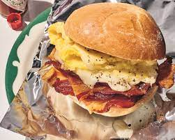

HOME

DESCRIPTION
In New York City, "bacon egg & cheese" is one word. That's just facts.
Eat it for breakfast, lunch or dinner! And if you only consider it to be a breakfast food, answer this: what time do you eat breakfast in a city that never sleeps? It's a well known fact that if you don't have one baconeggandcheese a day, you're a tourist. Word.
INGREDIENTS
- Some Bacon.
- Some Eggs.
- Some Cheese.
- Some rolls.
- Some butta.
- Avocado & a lil' salt (optional).
STEPS
- Throw some butter in a frying pan and spread it evenly over medium-high heat.
- Crack some eggs into the frying pan and scramble continuously to make some fluffy eggs.
- Heat up another frying pan under medium-high heat and lay some bacon strips out flat on it (don't get caught slippin' with the grease that'll inevitably pop out of the pan and get all over your kitchen. You'll feel a signifigant ammount of pain if said grease makes contact with your skin).
- While scrambling with your dominant hand, go ahead and flip that bacon with the other once the bottom is cooked to your satisfaction.
- Keep on scrambling until you get those fluffy eggs I was talking about, and if you timed it perfectly... the bacon and eggs should be ready at or very near the same time. Slap cheese over the eggs and cover the pan so it melts sensually.
- Go back in time and toast your bread so it'll also be ready at the same time. Also cut up an avocado (optional, but not really).
- Assemble the Avengers, I mean your sammich, in the following order... this step is crucial: bottom of bread, eggs with cheese, bacon, avocado, sprinkle with salt (#saltbae style), and top it off (pause) with the top piece of the bread.
- If done correctly, your sammich should let out a fairly audible "YERRR!"
- Enjoy that BACONEGGANDCHEESE and don't allow anyone to take the happiness it comes with from you.
*takes bite of egg, cheese and avocado sammich :)*
TOP-A-DA-PAGE